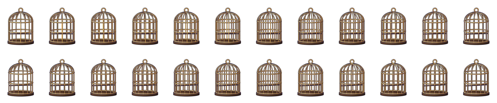
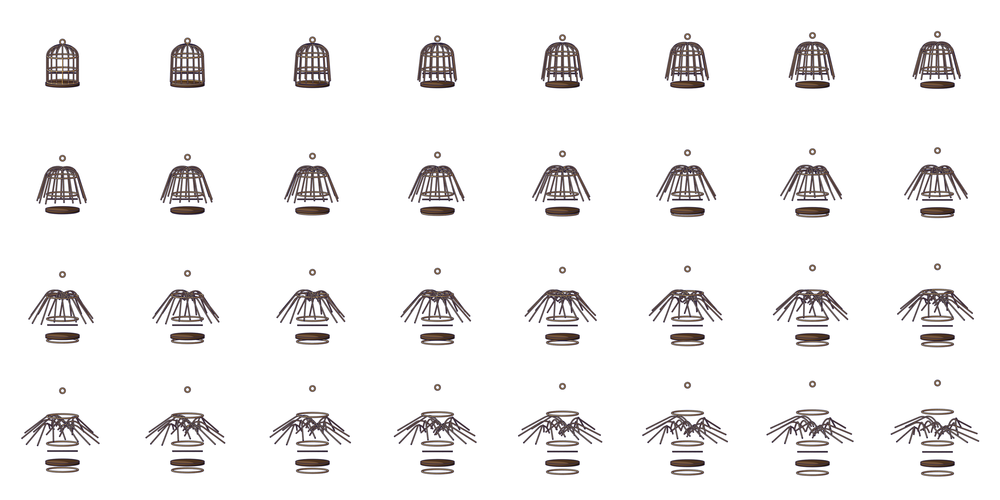
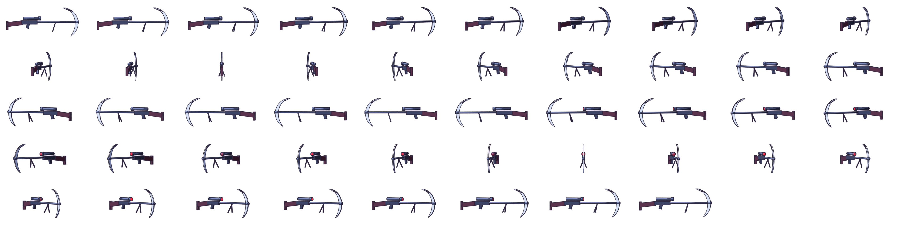

الموت الهارب موتي نكص قناص القنص تبعته القصور الخصص ظبي الذئب الفرص التشهي أعاجيب القصص العمر نقص غصص يا موت أجبن ألص الصف فتني ترص تعال حصتي رقص حر القفص يهرب يغلو الرخص ١٧ ١٨ ١٩ ٢٠ ٢١
تميم البرغوثي مع تميم ساحة Tamim Al-Barghouti The Fleeing Death AJ+ 0123456789
طاخ ووووش بوم كرررك ششش خرررر يا موت نكص قناص تبعته ظبي الذئب نقص تعال رقص حر القفص يهرب يغلو رخيص ∞ ٠ ١ ٩